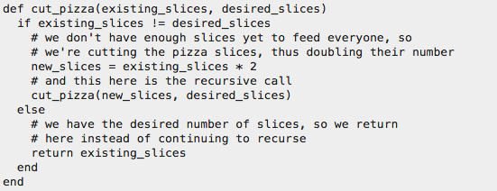

Recursion
JavaScript constructor functions
The idea of recursion is not very common in real world. So, it seems a bit confusing to the novice programmers. Though, I guess, they become used to the concept gradually. So, what can be a nice explanation for them to grasp the idea easily?
So in simple words recursion is calling of a function from within that same function. The most important thing you need to know is to be very careful to not get a loop that never ends. But here is na explenation in ruby:
................................................................

................................................................
So the real world operation is cutting a pizza, and the recursion is doing the same thing over and over until you have what you want.
Operations you'll find that crop up that you can implement with recursive functions are: Calculating compound interest over a number of months; looking for a file on a file system (because file systems are trees because of directories); anything that involves working with trees in general, I guess.